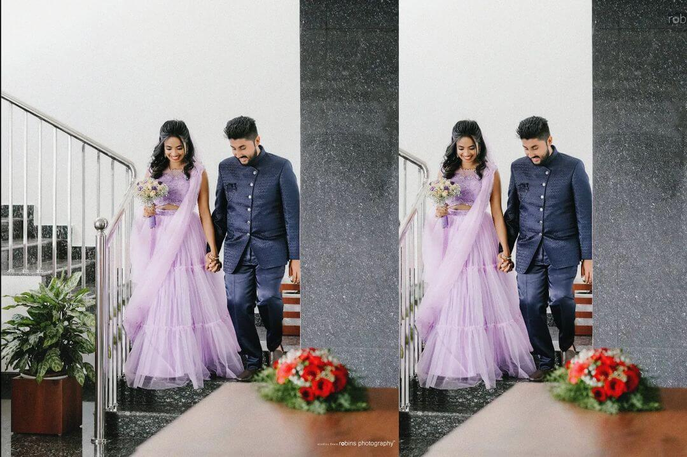
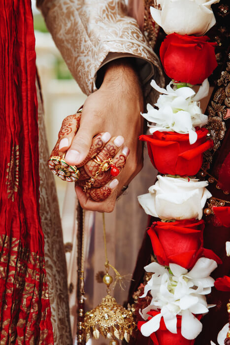

Embark on a visual journey of love and celebration with Robin's Photography, renowned as the epitome of the best wedding photography in Kerala. Nestled in the enchanting landscapes of God's Own Country, our photography services are a seamless blend of artistry, expertise, and a passion for storytelling.
At Robin's Photography, we understand that your wedding day is a tapestry of emotions, and our mission is to weave those precious moments into a visual symphony. With a reputation for excellence, we take pride in being the preferred choice for couples seeking unparalleled wedding photography services in Kerala.
Our team of skilled photographers is dedicated to capturing the essence of your special day with a keen eye for detail and a commitment to delivering images that transcend the ordinary. From the vibrant traditions of Kerala weddings to the scenic beauty that surrounds us, we artfully document every nuance, ensuring that your love story unfolds through each photograph. What sets us apart is our personalized approach.
We collaborate closely with our clients to understand their vision and preferences, ensuring that our photography services are tailored to encapsulate the unique essence of their love. From pre-wedding shoots to the grandeur of the ceremony and the intimate moments in between, Robin's Photography captures it all with finesse and creativity.
Our services extend beyond mere photography; we offer a range of customizable packages that cater to various needs and styles. With state-of-the-art equipment and a passion for perfection, we strive to create timeless images that will be treasured for generations to come. Choose Robin's Photography for an unparalleled wedding photography experience in Kerala.
Let us be the storytellers of your love, capturing the magic of your union with the finesse that comes from being the best in the business. Trust Robin's Photography to transform your wedding day into a visual masterpiece, where every frame tells a story of love, laughter, and happily ever after.